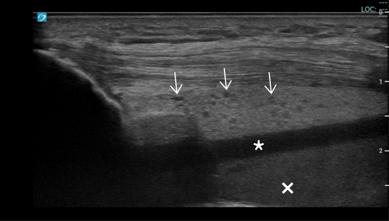
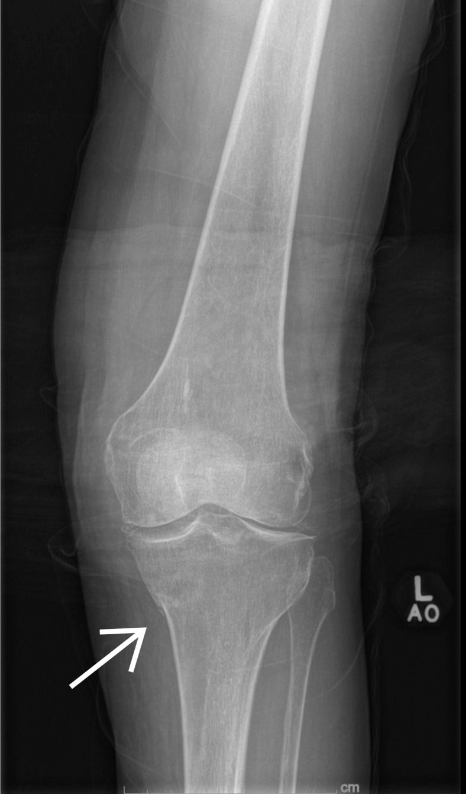

320 — Gãy xương & trật khớp cấp cứu: bờm mỡ, mỡ-máu & góc chuẩn / Trauma
Tags: pattern:gay-xuong vung:co-xuong-khop protocol:X-quang-chan-thuong
Mức chắc chắn (certainty): tổng hợp y văn (literature synthesis) — nhóm tự biên từ y văn mở, chưa gắn ca nguyên văn đơn lẻ.
1. Tổng quan — máu/mỡ trong khớp tố cáo gãy dù chưa thấy đường gãy
- Gãy phạm khớp làm rách mạch tủy → máu + mỡ tủy tràn vào ổ khớp — TẠI SAO bờm mỡ sau khuỷu (posterior fat pad) ở tư thế gấp 90° là bệnh lý 100%: bình thường nó nằm gọn trong hố mỏm khuỷu, chỉ khi tràn dịch/máu khớp mới bị đẩy nhô ra.
- Mức mỡ-máu (lipohemarthrosis): mỡ (−50 đến −100 HU) nhẹ nổi trên, huyết thanh giữa, hồng cầu lắng đáy — TẠI SAO 3 lớp phân tầng: riêng mỡ tủy chỉ thoát ra khi gãy phạm khớp (vỡ vỏ + thông tủy-khớp), bong gân đơn thuần không có mỡ.
- Ngưỡng: gãy mâm chày kín X-quang tới 15%; chọc khớp gối ra 70 mL máu mỡ là bằng chứng gãy (như ca dưới).
2. Gamut chấn thương khớp (Gamut)
- Ngã chống tay + khuỷu sưng + bờm mỡ sau: gãy kín đáo (trẻ: trên lồi cầu; lớn: chỏm quay) — bó bột + CT.
- Ngã đập gối + sưng to + mức mỡ-máu: gãy mâm chày — CT + mổ nâng mặt khớp khi lún > 2–3 mm.
- Co giật/điện giật + vai cứng xoay trong: trật sau (bỏ sót 50% phim thẳng!) — Grashey + CT.
- Ngã cao + đau gót + Böhler < 20°: gãy lún gót phạm khớp — CT + mổ.
3. Bảng so sánh phân biệt (ma trận đối chiếu)
| Thực thể (entity) | Hình ảnh điển hình | Chốt vào (rule-in) | Chốt loại (rule-out) | Gợi ý xác nhận |
|---|---|---|---|---|
| Gãy kín khuỷu | Bờm mỡ sau + cánh buồm trước ở gấp 90° | Mỡ sau = tràn máu khớp > 90% có gãy | Không mỡ sau → bong gân | Trẻ: trên lồi cầu; lớn: chỏm quay |
| Gãy mâm chày | Mức mỡ-máu 3 lớp + vỡ mâm | Mỡ −50 đến −100 HU trong khớp = phạm khớp 100% | Không mỡ → bong gân/sụn chêm | CT + mổ khi lún > 2–3 mm |
| Trật vai sau | Bóng đèn (lightbulb) + mất half-moon + rãnh ngược Hill-Sachs | Co giật + xoay trong cố định | Trật trước: chỏm ra trước-dưới | Grashey + CT + nắn cấp cứu |
| Gãy gót/Scapholunate | Böhler < 20°; SL > 3 mm (Terry Thomas) | Böhler 20–40° thường; SL ≤ 2 mm thường | Bình thường → bong gân | CT gót; MRI dây chằng cổ tay |

Mỡ tăng âm kèm hạt máu + huyết thanh không âm + máu giảm âm. Nguồn: Tripod et al., JACEP Open 2025 Fig. 1, CC BY-NC-ND 4.0 (giữ nguyên bản).
Đường gãy mờ bờ trong mâm chày — X-quang suýt bỏ sót. Nguồn: Tripod et al., Fig. 2, CC BY-NC-ND 4.0 (nguyên bản).4. Protocol X-quang chấn thương
- 2 bình diện + chéo/Grashey + cross-table lateral (mức mỡ-máu) + CT khi mỡ-máu/mỡ sau mà chưa thấy gãy; siêu âm điểm chăm sóc (POCUS) phát hiện mỡ-máu tại giường.
flowchart TD
A[Chấn thương khớp + sưng] --> B{Mỡ sau/mỡ-máu?}
B -->|Có| C[Gãy phạm khớp: CT + mổ]
B -->|Không| D{Böhler/SL/lightbulb?}
D -->|Bất thường| E[Gãy/trật kín: CT/MRI]
D -->|Bình thường| F[Bong gân: bảo tồn]
5. Cạm bẫy
- Trật vai sau bỏ sót 50% phim thẳng — cơ chế co giật + lightbulb là phải chụp Grashey/CT.
- Gãy mâm chày kín 15% X-quang thường — mỡ-máu là lệnh CT, đừng cho về.
- Scapholunate > 3 mm mạn thành sụp cổ tay (SLAC) — khâu sớm khi cấp, đừng bó bột mù.
6. Tự lượng giá — Blind Quiz
Ca 1 — Bà 78 tuổi ngã đập gối, X-quang "không gãy". Đọc siêu âm + phim.
- Hỏi: siêu âm mấy lớp? X-quang thấy gì? Chẩn đoán + bước tiếp?
Bấm để hiện đáp án
- Dấu hiệu (findings): mức mỡ-máu 3 lớp (mỡ + huyết thanh + máu) + đường gãy mờ mâm chày trong.
- Chẩn đoán (diagnosis): gãy mâm chày trong phạm khớp kín đáo — chọc ra 70 mL máu mỡ + CT xác nhận + hội chẩn mổ (X-quang suýt sót 15%).
- Nguồn: Tripod et al., Fig. 1–2, CC BY-NC-ND 4.0 (nguyên bản).
Ca 2 — Co giật + vai phải cứng xoay trong, phim thẳng "bình thường": trật gì? Phim nào tiếp? (Bảng mục 3.)
Bấm để hiện đáp án
- Trật vai sau: lightbulb + mất half-moon — chụp Grashey + CT rồi nắn (bỏ sót 50% phim thẳng).
Ca 3 — Đau gót sau ngã cao, Böhler 12°: gãy không? Xử trí? (Bảng mục 3.)
Bấm để hiện đáp án
- Gãy lún gót phạm khớp (< 20°): CT + mổ nâng mặt khớp (thường 20–40°).
Bài liên quan chéo
- 300 – Tổng quan MSK
- 310 – Xương phụ (gãy Jones vs vesalianum)
- 360 – Khớp gối (mâm chày + ACL)
Không dùng để chẩn đoán độc lập khi chưa có người hướng dẫn.